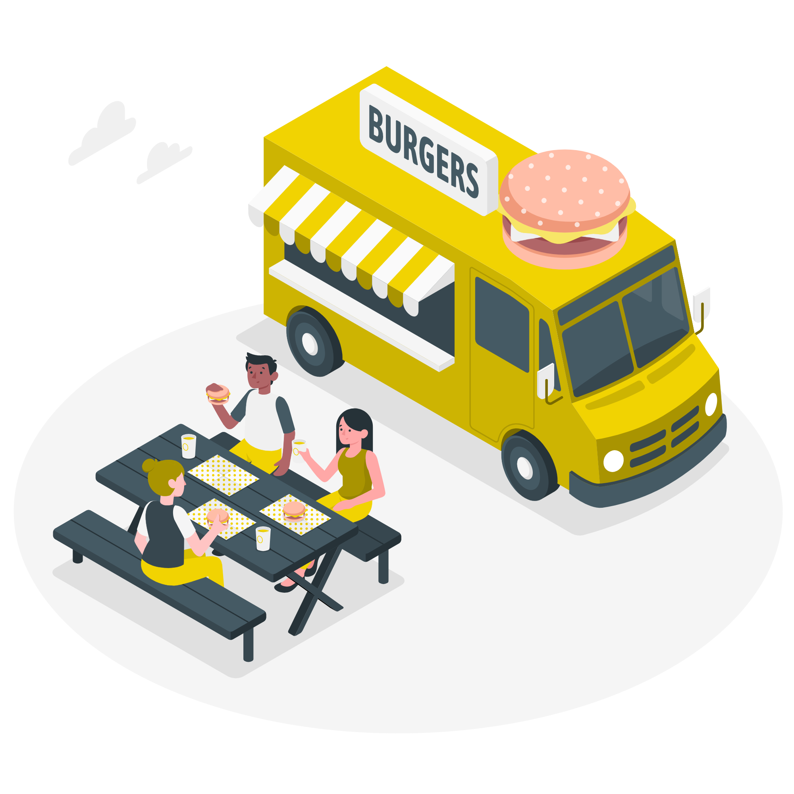

Nossa trabalho é ser líder em soluções de monitoramento de totem de autoatendimento, oferecendo serviços inovadores e de alta qualidade que agreguem valor aos nossos clientes e parceiros.
MISSÃO

Nossa missão é fornecer soluções de monitoramento de totem de autoatendimento para o setor de fast-food, garantindo a satisfação do cliente, eficiência operacional e aumento da receita dos nossos clientes.
VISÃO

Nossa visão é ser líder em soluções de monitoramento de totem de autoatendimento, oferecendo serviços inovadores e de alta qualidade que agreguem valor aos nossos clientes e parceiros.
VALORES

Nossos valores incluem a excelência no atendimento ao cliente, a transparência e ética em todos os nossos negócios, o compromisso em inovar e melhorar continuamente nossas soluções, e a responsabilidade social e ambiental em nossas atividades.